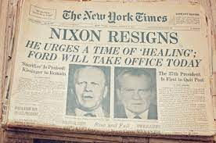

Watergate Timeline
| November 5, 1968 |
Nixon wins the presidency for the Republicans by defeating Hubert Humphrey |
| January 21, 1969 |
Nixon is inaugurated as the 37th president |
| July 23, 1970 |
President Nixon proposes a plan to expand domestic intelligence |
| June 13, 1971 |
The Washington Post published papers regarding secrets involved with the Vietnam War |
| September 3, 1971 |
The White House tries to plug the leaks in the administration regarding leaks with Pentagon Papers |
| June 17, 1972 |
Five men were arrested at 2:30am trying to collect data and bug the offices at the Democratic National Headquarters |
| June 19, 1972 |
John Mitchell, head of President Nixons reelection team denies any involvement with the scandal |
| August 1, 1972 |
A $25,000 cahsiers check from Nixons campaign was found in the bank acount of one of them individuals involved in the scandal |
| November 7, 1972 |
Nixon is reelected and shocks the country when he takes over 60% of the votes dominating the Democratic party |
| April 30, 1973 |
White House staff, Haldeman and Enrlichman, and Attorney General, Richard Lkeindienst resign due to the scandal |
| May 18, 1973 |
The senate Watergate Committee begins its nationally televised hearings |
| July18, 1973 |
Nixon orders the White House taping system disconnected |
| July 23, 1973 |
Nixon refuses to turn over the tapes |
| April 30, 1974 |
The White House releases more than 1,200 pages of edited transcripts of the Nixon tapes to the House of Judiciary |
| July 27, 1974 |
House Judiciary passes the first of three articles of impeachment |
| Augusta 8, 1974 |
Richard Nixon is the first President to resign |

So why were they breaking into the headquarters? What were they after? And who were they working for?
It was on June 17th, 1972, when five men broke into the Democratic headquarters where they photographed campaign documents and attempted to tap into the phone lines of important people helping with the Democratic party. On the night of the invasion, all the individuals involved in the break-in were arrested at the Watergate office complex. The thought of this invasion was to help give the republican party some insight into what the Democratic party had planned. |
So why was President Nixon believed to be involved with this scandal?
Nixon had just begun his second term as President when this scandal unfolded. It was also an election year, which means the president was under a great deal of pressure. President Nixon and his election committee thought they could gain a major advantage in the election if they could receive private information regarding the democratic party. Their hopes were to recover critical pieces of information that would be used against the republican party in the upcoming election. Once the investigation began, they later found a $25,000 cashier check marked for Nixon’s campaign program that ended up in the burglar's bank account before the invasion.
|
What happened to President Nixon?
On August 8th, 1974, President Nixon announced his resignation due to the ongoing investigation regarding the Watergate scandal. Following President Nixons resignation, he was at the lowest point of his life. He underwent many hospitilizations due to stress and depression. Nixon then decided to accept his loss and learn how to recover financially. He decided to go on multiple TV shows which made him millions. He also baught and sold realestate in his hometown, Florida. |